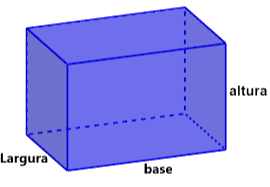

Áreas
Área da base (AB) = comprimento X altura da base Área lateral (AL) = perímetro da base X altura do prisma Área lateral (AT) = 2 X área da base X área lateral
Volume
Volume = Área da base X Altura
 Encontre a área total de um prisma triangular com base equilátera de lado 6 cm e altura 8 cm
AB = b.h/2
AB = 6.8/2
AB = 24cm²
AL = N DE LADOS.b.h
AL = 3.6.8
AL = 144cm²
AT = 2.24+144
AT = 192cm²
Calcule o volume de uma pirâmide quadrangular com base de 8 cm por 8 cm e altura de 10 cm.
V = ⅓.AB.h AB = base²
V = ⅓.8².10
V = ⅓.64.10
V = ⅓.640
V = 213.33…cm²
Determine a área da superfície lateral de um cilindro com raio de 6 cm e altura de 10 cm.
AL = 2πrh
AL = 2π6.10
AL = 2π.60
AL = 120π cm²
Encontre o volume de um cone com raio da base de 8 cm e altura de 12 cm.
V = ⅓.πr².h
V = ⅓.π8².12
V = ⅓.π64.12
V = ⅓.π.768
V = 256.π cm²
Calcule a área superficial de uma esfera com raio de 5 cm.
A = 4πr²
A = 4π.5²
A = 4π.25
A = 100π cm²